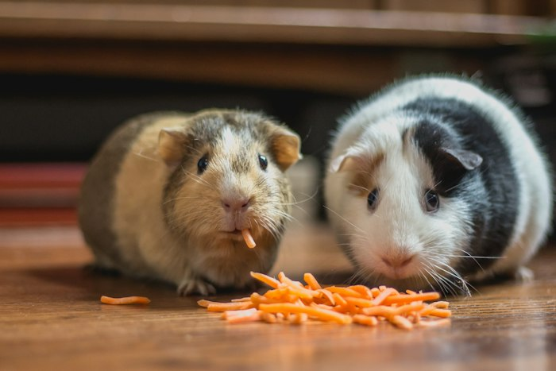

Sıfırdan sorunsuz ve sağlıklı bir akvaryum kurmak için adım adım rehber.

Akvaryumu kuracağınız yer çok önemlidir. Doğrudan güneş ışığı alan cam kenarları veya kalorifer peteklerinin hemen yanı uygun değildir. Güneş ışığı aşırı yosunlaşmaya, kalorifer ise suyun dengesiz ısınmasına sebep olur.
Masa Dayanıklılığı: Akvaryumun su, kum ve cam ağırlığı birlikte hesaplandığında her litre yaklaşık 1.2 kg eder. Örneğin 60 litrelik bir tank 75 kg civarı ağırlığa ulaşır. Masanın tamamen düz ve sağlam olması gerekir.
Strafor / Mat Kullanımı: Akvaryum tabanı ile mobilya arasına ince bir strafor veya akvaryum matı koymak, mikro düzeydeki pürüzlerin camı çatlatmasını önler.
Akvaryumun tabanına konulan kum hem yararlı bakterilere ev sahipliği yapar hem de bitkilerin tutunmasını sağlar.
Kum Temizliği: Kumu akvaryuma dökmeden önce bir kovada sadece su berraklaşana kadar durulayın. Kesinlikle sabun, deterjan veya çamaşır suyu kullanmayın.
Kum Kalınlığı: Bitkili akvaryumlarda 4 ila 6 cm kalınlık idealdir. İnce taneli dere kumu, silis veya lav kırığı tercih edilebilir.
Kök ve Taşlar: Yatı kökü veya mangrow gibi doğal kökler suya hafif sarımsı doğal bir renk verir ve balıkların bağışıklığını güçlendirir. Sivri kenarlı yapay süsler balıkları yaralayabilir.
Kum yerleştikten sonra su doldurma aşamasına geçilir.
Kumun Dağılmaması: Suyu doğrudan kovanın ağzından dökerseniz kum havalanır ve su bulanır. Tabanın üzerine düz bir porselen tabak koyun ve suyu tabağın üzerine yavaşça boşaltın.
Klor Uçurma: Suyu doldururken musluk suyu kullandıysanız, akvaryumu doldurduktan sonra içine su düzenleyici damlatarak klor ve ağır metalleri bağlayın.
Isıtıcı Yerleşimi: Isıtıcıyı suyun iyi dolaştığı bir yere yerleştirip sıcaklığı 24°C - 26°C seviyesine ayarlayın.
Akvaryumun en kritik evresi azot döngüsüdür. Balıkların dışkısından oluşan zehirli amonyağı nitrit ve nitrata dönüştüren bakterilerin çoğalması gerekir.
Bekleme Süresi: Filtreyi 24 saat kesintisiz çalıştırarak akvaryumu balıksız şekilde en az 7 ila 10 gün bekletin.
Bakteri Kültürü: İsteğe bağlı olarak akvaryumcudan hazır sıvı bakteri kültürü alıp ilk günlerde suya eklemek süreci hızlandırır.
İlk Balıkları Ekleme: Bekleme süresi bittikten sonra tüm balıkları aynı anda almak yerine, önce 2-3 adet dayanıklı balık ekleyip döngünün güçlenmesini bekleyin.